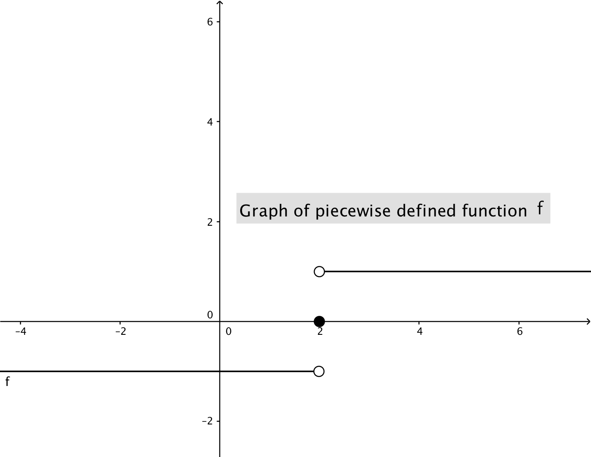

- (a)
- True or False: To find \(\lim _{x \to 2} f(x)\), it’s enough to know the values of \(f(2.1)\), \(f(2.01)\), \(f(2.001)\), and so on. False. These values will only help us make a guess at \(\lim _{x \to 2^+} f(x)\), the right hand limit of \(f\) as \(x\) approaches \(2\). To determine \(\lim _{x \to 2} f(x)\), we also need to know \(\lim _{x \to 2^-} f(x)\) which we cannot determine from the above values. For example, consider the function\[ f(x) = \begin {cases} -1 & \mbox {if $x < 2$,}\\ 0 & \mbox {if $x = 2$, and}\\ 1 & \mbox {if $2 < x$.} \end {cases} \]
Looking at the graph of this function below, we can see that \(\lim _{x \to 2^+} f(x) = 1\) and \(\lim _{x \to 2^-} f(x) = -1\). Thus, since \(\lim _{x \to 2^+} f(x) \neq \lim _{x \to 2^-} f(x)\), \(\lim _{x \to 2} f(x)\) does not exist.

- (b)
- True or False: If we know the value of \(f(2)\), then can we conclude that \(\lim _{x \to 2} f(x)=f(2)\)?